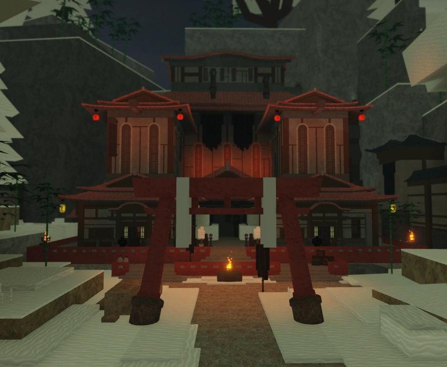
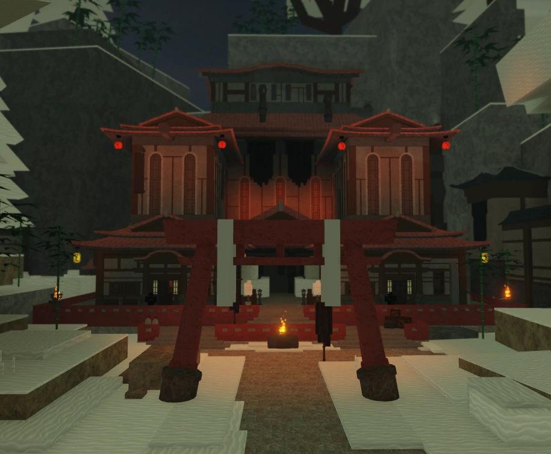

|
The Kingdom of Etrea
The Kingdom of Etrea almost entirely consists of Etreans. Their main goals are to obtain the Forge of Sin and defeat The Authority. They are the main ruling faction in the Etrean Luminant. They use galebreath magic. They had been ruled by kings for generations until the year 1271 where a new leader, the Lord Regent, appeared. The Regent will hire noble adventurers to retrieve pieces of the forge from The Duke of Erisia. He only likes Etreans in his main territory and will murder anyone who dare enter his palace without permission. Their is a Canor merchant at the Etrean docks who tells you that the new leader doesn't let Canors in town. Royal Guards are deployed to those the Kingdom deems as a considerable threat. While at the Etris Docks, a guard may talk about conflict with the Authority. Soon after this rare dialogue, The Authority will invade Etris. The entire kingdom can be seen burning during this event and a large onslaught of many Soldiers of both Etrean and Authority descent will sprawl onto the scene battling for control of the territory.
 
The Central Authority
The Central Authority's only know base is Fort Merit. They can be found at The Starswept Valley, Bluster Rift, Lower Erisia, Upper Erisia, and Etris either patrolling, training, or fighting other rival factions. Their main goal is the Conquest of all Luminants. They originated from the Central Luminant. They use Thundercall, Flamecharm, and Frostdraw magic. They work with smaller factions such as the Summer Company, Divers, and The Knives of Eylis. The highest ranked Authority members are all Adrets. While at the Etris Docks, a guard may talk about conflict with the Authority. Soon after this rare dialogue, The Authority will invade Etris. The entire kingdom can be seen burning during this event and a large onslaught of many Soldiers of both Etrean and Authority descent will sprawl onto the scene battling for control of the territory. The Authority keeps bound Etreans and bound Nomads in their large prison island known as Fort Merit. This island has many Authority members keeping guard over the cells to make sure nothing is wrong.
The Eleventh Legion
The Eleventh Legion is a subdivision of the 100 Legions. Their soldiers consist of Legion Footsoldiers, Guards, and Snipers. They use Ritual Spears along with lightning magic to combat their foes. Captains of the Legion and Authority can be seen fighting in the Starswept Valley. Legion Snipers can also be seen here using grand javelin to deal heavy damage from afar. Legion guards can be found in a cave under Lower Erisia where they have a camp set up. This is also where Legion Guards can be found, standing watch while others sleep. Legion Footsoldiers can also befound patrolling Upper Erisia and fighting The Central Authority's footsoldiers.
The Hive
The Hive work in Greathive Aratel. Their goal is to make progress through the world with artifacts and advancements in technology. Their people are mainly Vesperian along with the occasional Ganymede. They have statues outside of Greathive Aratel dedicated to the Hivelords. Their soldiers consist of Hive Guards and Hive Constructs. They use Flame magic and Lifeweaving magic to defend and attack those who attempt to steal from the hive. Hive Constructs can be seen using lifeweaving to create trees just by walking. Hive Constructs are giant robots that use Lifeweaving along with their large arms and legs to trample and throw their enemies. The Authority and Etreans are the only ones who dare attempt to try to fight members of the Hive. The Hive was founded by ancestors of the Vesperians and Ganymedes known as the Hivelords. The current Hivelord is "Zithori Vhemm Diri" who uses light magic to obliterate his foes. He is a ganymede.
The Summer Company
The Summer Company's main goal is to make a profit. They reside on the Summer Isle in The Aratel Sea. Their island is connected to a sea highway that leads to Fort Merit. Their main source of income comes from the firearms they sell. Currently these firearms include Flintlocks, Revolvers, and Dragoons. The Summer Company Originated when a blacksmith returned with firearms from a foreign land along with other technologies. This company is one of the three factions working with The Authority. The Ignition Union steals gunpowder and explosives that the Summer Company sells to use for their expeditions into the depths, these two are often seen fighting at Summer Isle. All named members of the Summer Company are named after gun parts.
The Ministry
The Ministry is a mysterious faction that uses Shadowcast humanoid robots along with krulian daggers to attack trespassers. These robots can be found spouting information about plans to start a second great drowning just like Celtor. They are seen only at Minityrsa and Summer Isle. At Minityrsa, they are seen fighting frostdraw songseekers while at Summer Isle they attempt to attack anyone they see including Nomads, The Ignition Union, and The Summer Company. Inside a mysterious building at Minityrsa where many of these robots gather, there is a basement that leads to The Trial of One. The Trial of One has a similar layout to The Knives of Eylis's hideout however it is unknown whether these two factions have any correlation.
The Ignition Union
The Ignition Union steal gunpowder from The Summer Company and mining territory in the depths from The Divers. Their main goal is to use these two bits of theivery to make out with a large profit through the secrets in the depths. They can be found throughout The Depths and Summer Isle. They are miners who explore the depths. They were also the creators of the Darksteel Greatsword and Crypt Blade. This faction is employed by The Authority along with The Knives of Eylis and Summer Company. They are frequently seen fighting the Summer Company over gunpowder and explosives.
The Celtorian Kingdom
The City of the Drowned is the largest known city in all of Deepwoken. There are watchers who shine lights trying to find anyone who dare enter the city after the great drowning. If a watcher spots someone, a loud sound is heard and 2 angels will be summoned to attack them. The City is also guarded by Celtor guards who have lost their sanity due to Yun'shul. The city features 6 districts along with a palace in the center. On opposite sides of the cities there are a single gate to enter. One of these gates has a Nautilodaunt digging in the ground. The palace has a large elevator with a lever that allows a user to ascend. At the top, the user hears The Voices of the Depths. These voices are drowned gods that oversee those who attempt to escape from the depths. They include the Voice of Odium, the Voice of Sequestration, and the Voice of Enmity. These voices will summon a monster to any that try to escape, however, if the monster is defeated then they are free and brought up to the surface. The Shadowcast trainer Nostor can also be found in this city.
The Divers
The Divers are one of the few Factions that dare to explore The Depths. Many of their scouts can be seen falling to the many beasts the depths has to offer. Their main goals are to research The Depths are bring the information back to The Central Authority on the surface. They originated from The Central Luminant on The Island of Markor and are seen almost exclusively in the depths. Their main base is The Citadel which is on The Island of Markor. They also have a small castle in the depths known as Castle Light. This castle uses a spell to keep a barrier preventing those who were drowned through death from entering the Castle. Many of the Divers are reasearchers and scholars who want to explore the Depths and protect the surface from the creatures of the Deep. Black Divers are a higher ranking diver that is atleast as strong as an entire squadron of normal divers. These divers usually possess special abilities or are adept with the song. Akira is a Black Divers who uses a Yun'shul like resonance and is able to implode his enemies skulls if they disturb him. He has been working with the divers for almost 10 years. Pleeksty is a former Black Diver who was last seen in Layer 3 of the depths. He is known as the most powerful Flamecharmer in the entire luminant and has many talents and spells named after him. Flunke is a Black Divers who is known for being able to create Thundercall potions that allow a user to resonate with the song of thundercallers. Nell is a Black Diver who is able to create Frostdraw potions that allow a user to resonate with the song of frostdrawers.
The Knives of Eylis
The Knives of Eylis are an assassins guild that works for The Central Authority. Their goals are to gain power, wealth, and fame. They live in Voidheart, a collective dream of those working under Eylis have while in the Voidsea. The Knives serve Eylis, the Punished Dreamer. The Central Authority hires them to cause havoc in the Eastern Luminant (Etrean Luminant). The Knives are able to take bounties are teleport near their target. They can either choose to have an ESP on their target and hunt them with ferocity or hide in the shadows and work with stealth.
The Children of Navae
The Children of Navae follow the god Navae. They are peaceful nomads that live off the land away from the war that has plagued the rest of the world. Most Nomads are Gremors, and as such Gremors are gifted with what Navae gives to her followers, including a compass that always points to Navae. They use Gremorian Longspears, Ice magic, and The Way of Navae fist style to combat those that disturb Navae. The Children of Navae can be found at Etris in a nomad camp, Erisia tied up by the Knives of Eylis, and Summer Isle where they are seen fighting the Minityrsan scouts that attempt to disrupt their eternal peace. At Summer Isle they can also be seen camping around in the lush and fruitful forests that exist on the island.
NOTE: TAKE MOUSE OFF THE SCROLLER FOR IT TO SCROLL, KEEP IT ON FOR IT TO STOP SCROLLLING